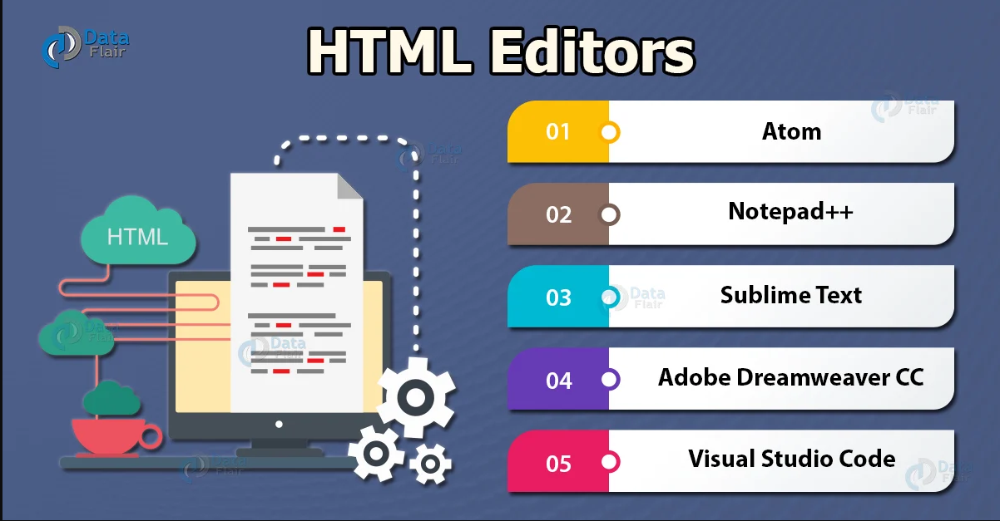

Editores HTML
Cualquier desarrollador que se encargue del diseño del front-end de un proyecto debe conocer muy bien la Trinidad del diseño: HTML, CSS y JavaScript.
un editor de HTML se utiliza para escribir la base de un sitio web. Si bien cualquier editor de textos puede hacer este trabajo, no significa que tengas que hacerlo sin ningún tipo de ayuda. Las funciones adicionales, la comprobación de errores y un editor más intuitivo en general pueden facilitarte la vida significativamente a la hora de escribir código y optimizar tu proceso de desarrollo web.
Los fundamentos de los editores de HTML son los mismos: te ayudan a escribir código resaltando las sintaxis, insertando elementos y estructuras HTML de uso común, y ofreciendo autocompletado.
El texto que utiliza un editor de HTML también se puede traducir a otros lenguajes, como CSS, XML o JavaScript. Pero como sabemos, no todas las cosas están hechas de la misma manera. Algunos editores pueden ser más fáciles de usar, mientras que otros brindan mayor funcionalidad.
Editores HTML textuales Vs. WYSIWYG
- Editores WYSIWYG
Este es el acrónimo de What You See Is What You Get (Lo que ves es lo que obtienes). Estos editores proporcionan una interfaz de edición que muestra cómo se ve el código en una página web activa. El uso de WYSIWYG no requiere ningún conocimiento de HTML. Por lo tanto, es mucho más fácil comenzar para un usuario sin experiencia alguna en programación. Ejemplo: Adobe Dreamweaver.
- Editor HTML textual
Como su nombre lo indica, los editores de HTML textuales se basan en texto. Debes tener conocimientos de HTML para utilizar este tipos de editores. Las funciones incluyen la apertura de archivos, ya sea un solo archivo, un proyecto completo o múltiples proyectos, y es algo disponible en todos los editores. Al utilizar un editor basado en texto, no puedes ver una vista previa en vivo del sitio. Este tipo de editor puede ofrecer más libertad y opciones personalizadas. Con un editor textual, puedes optimizar mejor las páginas web para los motores de búsqueda. Por ejemplo, es posible crear una página web que siga las Pautas de accesibilidad del contenido web (WCAG, por sus siglas en inglés), para que las personas con discapacidades puedan ver tu página web.
Editores de HTML :
- Sublime text: se encuentra en la categoría de freemium (Freemium significa que puedes usar Sublime de forma gratuita, pero debes comprar una licencia para poder disfrutar de todas las funciones.)
- Visual Studio Code: es un editor de código fuente desarrollado por Microsoft
- Atom: uno de los mejores editores de HTML, gratuito y de código abierto, y fue desarrollado por el equipo de GitHub. Atom usa una licencia de software libre para su paquete y es mantenida por la comunidad de GitHub.
- Notepad ++: es un editor que fue desarrollado para máquinas basadas en Windows. Los usuarios de Linux también pueden usarlo a través de Wine. Este editor se distribuye como software libre y su repositorio también está disponible en GitHub. Notepad++ se distingue por su simplicidad, además es súper liviano
